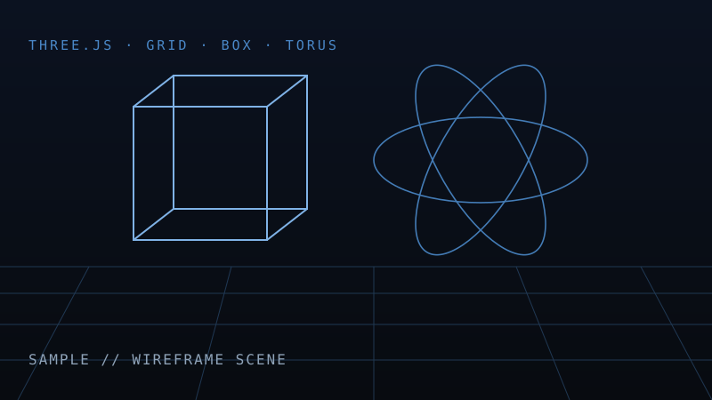
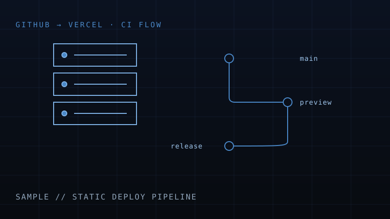

这个博客的 3D 背景只有三个元素：网格地面、线框立方体、线框圆环。没有粒子、没有辉光、没有后期处理——目标是「工程制图」的理性质感，而不是赛博霓虹。这篇文章记录关键实现。

为什么用 importmap 而不是 script 标签
Three.js 从 r160 起移除了 UMD 全局构建，老式的 <script src="three.min.js"> 配合全局 THREE 对象的写法已经失效。现代写法是 importmap + ES Module：
<script type="importmap">
{
"imports": {
"three": "https://cdn.jsdelivr.net/npm/three@0.160.0/build/three.module.js"
}
}
</script>
<script type="module" src="js/wireframe-bg.js"></script>锁定版本号可以避免 CDN 自动升级带来的破坏性变更。需要注意 ES Module 不支持 file:// 协议，本地预览要起一个静态服务器。
棱边立方体与线框圆环的区别
两个几何体看起来都是「线框」，用的却是不同 API：
- 立方体用
EdgesGeometry：只提取 12 条棱边，干净利落，像 CAD 图纸； - 圆环用
WireframeGeometry：保留所有三角剖分线，曲面的网格密度本身就是装饰。
鼠标视差：lerp 平滑是关键
直接把相机位置绑定鼠标坐标会显得生硬。做法是维护「目标值」和「当前值」两个变量，每帧用线性插值靠近目标：
view.x += (mouse.x - view.x) * 0.05; // 系数越小越柔和
camera.position.x = cameraBase.x + view.x * 1.2;
camera.lookAt(lookTarget);滚动淡出与事件穿透
canvas 固定在 position: fixed; z-index: 0，并设置 pointer-events: none，鼠标事件全部穿透给页面元素。滚动时按 scrollY 占视口高度的比例线性降低 canvas 透明度，文章区自然浮现：
const opacity = Math.max(0, 1 - window.scrollY / (innerHeight * 0.8));
canvas.style.opacity = String(opacity);
性能与降级
devicePixelRatio上限设为 2，防止高分屏和移动端过度渲染；- 页面切到后台（
visibilitychange）时暂停渲染循环； - 检测
prefers-reduced-motion，用户开启减少动态效果时停止自转； - WebGL 不可用时直接隐藏 canvas，降级为纯 CSS 深色底，内容不丢。
完整代码见仓库 js/wireframe-bg.js，所有可调参数（颜色、尺寸、速度）都集中在文件顶部的 CONFIG 常量中。